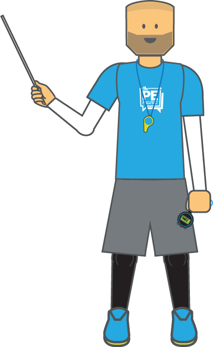

To be a good PE teacher it is essential that we can define and clarify our learning objectives to pupils at the start of each lesson. By helping students to clearly know what they should accomplish by lessons end will increase their focus and empower them to take more ownership of the activities and their learning [1, 2].
- 1. Before deciding on your Lesson Objectives it is important to focus on what needs to be learned in relation to your department’s schemes of work and to take in to account a range of factors about your class (age, class size, gender, additional learning needs, previous experience, duration, facilities and equipment available)[3].
- 2. Once you’ve gained this information, break down the unit of work objectives in to lesson-sized chunks (or concrete, manageable targets) and decide if the aim is to improve knowledge, understanding, skills or values [1, 2, 4]. Traditionally in PE there has been an over-emphasis on skill development [3]. It is important to find a balance in our lesson objectives by emphasizing improved skills and knowledge (these are known as behavioral objectives as they can be witnessed), whilst also aiming to develop understanding and personal growth (non-behavioural objectives as they are to some extent invisible) [4].
Learning Objectives are usually expressed in term of pupils’ learning and consist of four qualities:
A STEM (a prefix)
The most commonly used in PE and schools is:“By the end of the lesson, pupils…”
A MEASURABLE VERB
This is an action word that relates to the key outcome verbs within Blooms Taxonomy which will help differentiate your learning objectives. For PE, we can use the adapted taxonomy verbs from Anderson and Krathwohl (2001) and include relevant PE synonyms.
THE ADJECTIVE (or condition)
How the tasks or behavior will be performed and under what conditions.
THE CONTEXT (or standard)
How well the task or behavior must be performed to meet the standard. [1, 2, 4]
As a result, your lesson objectives should look like this:
By the end of the lesson,
- To be able to… Verb/Adjective/Context
Or
- To be able to What/How/Where
Examples of learning objectives
By the end of the lesson, pupils will be able to:
Gymnastics
- -To be able to perform four travelling patterns on the floor
- -To compare a short individual phrase of movement in to and out of an inverted balance
- -To understand the basic principles of combining basic actions via linking actions
Badminton
- -To demonstrate the accurate placement of an overhead shot in badminton
- -To understand the basic tactical principles of net games
- -To analyse the accuracy of their partner when in a game situation and use this to improve understanding

References
- Leask, M., & Davison “Schemes of Work and Lesson Planning”. In Capel, S., Leask, M., Turner, T. (2001) Learning to Teach in the Secondary School: A Companion to School Experience. London: RoutledgeFalmer pp. 70-71
- Arthur, J., & Capel, S. (2015) “How planning and evaluation support effective learning and teaching” In, Capel, S., & Whitehead, M. (2015) Learning to Teach Physical Education in the Secondary School: A companion to school experience. Routledge: Oxon. Pp.36-38
- Grout, H. & Long, G. (2009) Improving Teaching & Learning in Physical Education. Bershire: Open University Press
- Bailey, R. (2001) Teaching Physical Education: A handbook for Primary and Secondary School Teachers. London: Kogan Page
- Anderson, L.W., Krathwohl, D.R., Airasain, P.W., Cruikshank, K.A., Mayer, R.R., Pintrich, P.R., Raths, J. and Wittrock, M.C. (eds) (2001) A Taxonomy for Learning, Teaching and Assessing – A revision of Bloom’s Taxonomy of Educational Objectives, complete edition, New York: Addison Wesley Longman
- Bloom, B., Englehart, M.D., Furst, E.J., Hil, W.H. and Krathwohl, D.R. (eds) (1956) Taxonomy of Educational Objectives: The Classification of Educational Goals, Handbook I: Cognitive Domain. New York: D.McKay.